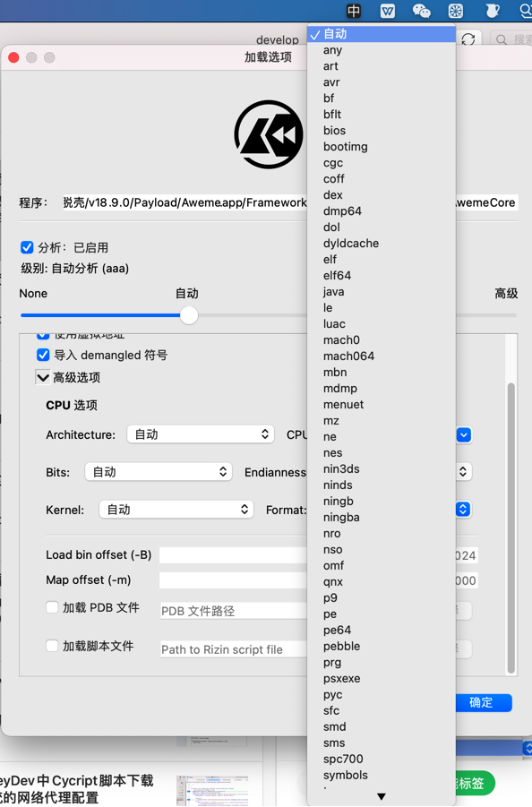

dyld_shared_cache
- dyld的shared cache = dyld (shared) cache
- 概述：所有Framework库都被合并到共享缓存shared cache中了
- 位置：
/System/Library/Caches/com.apple.dyld//System/Library/Caches/com.apple.dyld/dyld_shared_cache_armXX=6,7,7s,64- 举例
/System/Library/Caches/com.apple.dyld/dyld_shared_cache_arm64
- 举例
/System/Library/dyld/dyld_shared_cache_arm64e
- 详解
- 从
iPhone OS 3.1之后，所有系统（私有的private和公开的public）的库，都被合并到一个大的缓存文件了，目的是提升性能- 原始的单个的库文件，就多余了，所以被去掉了
- -》直接访问原始的单个系统库文件，就会出找不到的现象
- 所以去从之前的，保存单个系统库的位置
- public=公开的库
/System/Library/Frameworks
- private=私有的库
/System/Library/PrivateFrameworks
- public=公开的库
- 就找不到库了
- 所以去从之前的，保存单个系统库的位置
- 举例
- iOS 13.5
- 二进制程序代码
- 位置
/Applications/private/var/staged_system_apps
- 是
shims的 ->class-dump：会报错，找不到ObjC section
- 位置
- 二进制程序代码
- iOS 13.5
- -》直接访问原始的单个系统库文件，就会出找不到的现象
- 原始的单个的库文件，就多余了，所以被去掉了
- 从
- 其他介绍
- /System/Library/Frameworks - The iPhone Wiki
/System/Library/Frameworks- A framework is a dynamic library and resources for that library, such as images and localization strings. Frameworks have the file extension .framework.
- In iOS there are two kinds of frameworks: public frameworks and private frameworks. Public frameworks are allowed to be used in App Store apps. Private frameworks are intended to be used only by Apple's apps, and are more unstable against firmware changes, but many of the interesting features are in the private frameworks.
- Since iOS 3.1, all default (private and public) libraries have been combined into a big cache file in
/System/Library/Caches/com.apple.dyld/dyld_shared_cache_armXto improve performance. See dyld_shared_cache for more details. The original libraries are no longer useful for non-on-device-developers, so they are eliminated from the system. The framework folders still contain other resources, such as localization strings.
- Private Frameworks
- See
/System/Library/PrivateFrameworks.
- See
- /System/Library/Frameworks - The iPhone Wiki
- 源码
- github.com
- opensource.apple.com
- https://opensource.apple.com/source/dyld/dyld-852.2/dyld3/shared-cache/
- https://opensource.apple.com/source/dyld/dyld-852.2/dyld3/shared-cache/dyld_shared_cache_util.cpp.auto.html
- https://opensource.apple.com/source/dyld/dyld-852.2/dyld3/shared-cache/dsc_extractor.cpp.auto.html
- https://opensource.apple.com/source/dyld/dyld-852.2/dyld3/shared-cache/dsc_iterator.cpp.auto.html
- https://opensource.apple.com/source/dyld/dyld-852.2/dyld3/shared-cache/dyldinfo.cpp.auto.html
- https://opensource.apple.com/source/dyld/dyld-852.2/dyld3/shared-cache/DyldSharedCache.cpp.auto.html
- https://opensource.apple.com/source/dyld/dyld-852.2/dyld3/shared-cache/
系统相关工具
update_dyld_shared_cache
man page
update_dyld_shared_cache(1) BSD General Commands Manual update_dyld_shared_cache(1)
NAME
update_dyld_shared_cache -- Updates dyld's shared cache
SYNOPSIS
update_dyld_shared_cache [-root directory] [-overlay directory] [-arch arch] [-force] [-debug] [-sort_by_name] [-universal_boot] [-verify]
[-dylib_list file] [-iPhone] [-cache_dir dir]
DESCRIPTION
update_dyld_shared_cache ensures that dyld's shared cache is up-to-date. This tool is normally only run by Apple's Installer and Software
Update, as they are the only official ways for OS dylibs to be updated. But if for some reason you used another mechanism to alter an OS
dylib, you should manually run update_dyld_shared_cache.
Note that the new cache does not take effect until the OS is rebooted.
If a safe-boot is done (booting with shift key held down) the cache is deleted.
The dyld shared cache is mapped by dyld into a process at launch time. Later, when loading any mach-o image, dyld will first check if is in
the share cache, and if it is will use that pre-bound version instead of opening, mapping, and binding the original file. This results in
significant performance improvements to launch time.
update_dyld_shared_cache scans the directory /var/db/dyld/shared_region_roots for text files containing paths to mach-o executables. The
full dependencies of all dylibs required by those executables is used to determine which libraries are commonly used and should be placed in
the shared cache. If one of the text files contains a path to a dylib, that dylib and its dependents will be forced into the cache.
update_dyld_shared_cache builds a separate cache file for each architecture. The cache files and a readable text map of the cached are gen-
erated to /var/db/dyld.
You must be root to run this tool.
The options are as follows:
-root directory
This option specifies the root of an OS installation for which dyld's shared cache should be updated. This is used by the In-
staller to update the dyld shared cache in a partition other than the one you into which you are currently booted. The cache
files are created in the var/db/dyld directory of the specified directory. Note: if you are manually doing this, be sure to run
the update_dyld_shared_cache tool that is in the partition being updated. This assures the cache format created will match that
expected when booting off that partition.
-overlay directory
This option specifies the root of a sparse directory tree. When building the dyld shared cache, any corresponding mach-o files
in the sparse directory will override those in the boot partition. This is used by Software Update to build a dyld shared cache
for the update that is about to be installed. The cache files are created in the var/db/dyld directory of the specified direc-
tory.
-arch arch By default update_dyld_shared_cache generates cache files for all architecture that the current machine can execute. You can
override this behavior by specifying one or more -arch options and list exactly which architectures should have their shared
caches updated.
-force This option will cause update_dyld_shared_cache to regenerated the shared cache files even if they appear to be already up-to-
date.
-debug This option prints out additional information about the work being done.
-sort_by_name
By default update_dyld_shared_cache assigns a random start address to each mach-o image in the cache. This option causes the
start addresses to be chosen in path order, thus subsequent runs will produce the same address layout which can help reproduce
some bugs.
-universal_boot
This option can only be used running on an machine with an Intel processor. It builds caches that can be used when booting on
both 32-bit and 64-bit machines.
-dylib_list file
Instead of scanning /var/db/dyld/shared_region_roots/, this option provides a file that contains a list of the dylibs to use when
building the shared cache file.
-verify Will regenerate a shared cache in-memory that matches the randomization of the existing shared cache file. Then instead of writ-
ing the cache file, it compares the in-memory cache file to the on disk version and reports any differences.
-iPhone indicates that cache is not for the current Mac OS X, but for rather for an iPhone
-cache_dir directory
This option specifies the directory in which to create the cache file(s). If not specified, the cache file(s) are created in the
standard location (e.g. var/db/dyld/) of the root partition.
FILES
/var/db/dyld/shared_region_roots directory of text files with paths to mach-o images used to determine what should be in shared cache.
SEE ALSO
dyld(1)
Darwin Oct 10, 2008 Darwin
逆向提取工具
dyld_decache- Dsc_extractor
- 介绍
- is Apple’s own open-source tool for extracting libraries and frameworks from dyld_shared_cache. When extracting data, the utility saves the locations and original names of all extracted objects.
- 开源代码
- 介绍
dyld_cache_extract- 作用：可视化的工具，把dyld_shared_cache载入即可解析出来
- Github
涉及到的地方
相关函数
// Returns if any OS dylib has overridden its copy in the shared cache
//
// Exists in iPhoneOS 3.1 and later
// Exists in Mac OS X 10.10 and later
extern bool dyld_shared_cache_some_image_overridden(void);
// Returns path used by dyld for standard dyld shared cache file for the current arch.
//
// Exists in Mac OS X 10.11 and later
extern const char* dyld_shared_cache_file_path(void);
struct dyld_shared_cache_dylib_text_info {
uint64_t version; // current version 2
// following fields all exist in version 1
uint64_t loadAddressUnslid;
uint64_t textSegmentSize;
uuid_t dylibUuid;
const char* path; // pointer invalid at end of iterations
// following fields all exist in version 2
uint64_t textSegmentOffset; // offset from start of cache
};
typedef struct dyld_shared_cache_dylib_text_info dyld_shared_cache_dylib_text_info;
#ifdef __BLOCKS__
// Given the UUID of a dyld shared cache file, this function will attempt to locate the cache
// file and if found iterate all images, returning info about each one. Returns 0 on success.
//
// Exists in Mac OS X 10.11 and later
// iOS 9.0 and later
extern int dyld_shared_cache_iterate_text(const uuid_t cacheUuid, void (^callback)(const dyld_shared_cache_dylib_text_info* info));
// Given the UUID of a dyld shared cache file, and a NULL terminated array of extra directory paths to search,
// this function will scan the standard and extra directories looking for a cache file that matches the UUID
// and if found iterate all images, returning info about each one. Returns 0 on success.
//
// Exists in Mac OS X 10.12 and later
// iOS 10.0 and later
extern int dyld_shared_cache_find_iterate_text(const uuid_t cacheUuid, const char* extraSearchDirs[], void (^callback)(const dyld_shared_cache_dylib_text_info* info));
#endif /* __BLOCKS */
// Gets the UUID of the dyld shared cache in the current process.
// Returns false if there is no dyld shared cache in use by the processes.
//
// Exists in Mac OS X 10.12 and later
// Exists in iOS 10.0 and later
extern bool _dyld_get_shared_cache_uuid(uuid_t uuid);
// Returns the start address of the dyld cache in the process and sets length to the size of the cache.
// Returns NULL if the process is not using a dyld shared cache
//
// Exists in Mac OS X 10.13 and later
// Exists in iOS 11.0 and later
extern const void* _dyld_get_shared_cache_range(size_t* length);
// Returns if the currently active dyld shared cache is optimized.
// Note: macOS does not use optimized caches and will always return false.
//
// Exists in Mac OS X 10.15 and later
// Exists in iOS 13.0 and later
extern bool _dyld_shared_cache_optimized(void);
// Returns if the currently active dyld shared cache was built locally.
//
// Exists in Mac OS X 10.15 and later
// Exists in iOS 13.0 and later
extern bool _dyld_shared_cache_is_locally_built(void);
// This is similar to _dyld_shared_cache_contains_path(), except that it returns the canonical
// shared cache path for the given path.
//
// Exists in macOS 10.16 and later
// Exists in iOS 14.0 and later
extern const char* _dyld_shared_cache_real_path(const char* path);
/System/Library/Caches/com.apple.dyld/dyld_shared_cache_armX
iPhone7
iPhone7:~ root# ls -lh /System/Library/Caches/com.apple.dyld
total 1.7G
-rwxr-xr-x 1 root admin 1.7G Apr 3 2020 dyld_shared_cache_arm64*
iPhone8
iPhone8-150:~ root# ls -lh /System/Library
total 0
...
drwxr-xr-x 40 root wheel 1.3K Sep 16 2021 CacheDelete/
drwxr-xr-x 6 root wheel 192 Sep 16 2021 Caches/
...
->
iPhone8-150:~ root# ls -lh /System/Library/Caches
total 0
lrwxr-xr-x 1 root wheel 45 Sep 16 2021 apticket.der -> ../../../usr/standalone/firmware/apticket.der
drwxr-xr-x 9 root wheel 288 Sep 16 2021 com.apple.dyld/
drwxr-xr-x 21 root wheel 672 Nov 11 2014 com.apple.factorydata/
drwxr-xr-x 2 root wheel 64 Sep 16 2021 com.apple.kernelcaches/
->
iPhone8-150:~ root# ls -lh /System/Library/Caches/com.apple.dyld
total 2.5G
-rwxr-xr-x 1 root admin 521M Sep 16 2021 dyld_shared_cache_arm64*
-rwxr-xr-x 1 root admin 513M Sep 16 2021 dyld_shared_cache_arm64.1*
-rwxr-xr-x 1 root admin 508M Sep 16 2021 dyld_shared_cache_arm64.2*
-rwxr-xr-x 1 root admin 83M Sep 16 2021 dyld_shared_cache_arm64.3*
-rwxr-xr-x 1 root admin 238M Sep 16 2021 dyld_shared_cache_arm64.4*
-rwxr-xr-x 1 root admin 199M Sep 16 2021 dyld_shared_cache_arm64.5*
-rwxr-xr-x 1 root admin 456M Sep 16 2021 dyld_shared_cache_arm64.symbols*
/System/Library/dyld/dyld_shared_cache_arm64e
How to Reverse Engineer an Undocumented macOS API to Use It in a Swift Project | Apriorit
Step 1: Obtaining a method signature
The OSSystemExtensionClient API is part of the SystemExtensions framework. The framework is packaged as a dynamically linked shared library, which is part of the dynamically linked shared library cache available at /System/Library/dyld/dyld_shared_cache_arm64e.
objc-runtime-new.mm
objc-runtime-new.mm (apple.com)
objc_class::demangledName(bool realize)
...
// fixme lldb's calls to class_getName() can also get here when
// interrogating the dyld shared cache. (rdar://27258517)
// fixme runtimeLock.assertLocked();
// fixme assert(realize);
Mask.dylib
➜ DynamicLibraries rabin2 -i Mask.dylib > MaskDylib_rabin2_i_imports.txt
->
MaskDylib_rabin2_i_imports.coffee
50 0x0000e508 NONE FUNC dyld_shared_cache_file_path
IDA
DYLD Shared Cache Utils | Hex-Rays Docs
IDA: IDA 7.2 - The Mac Rundown (hex-rays.com)
This is another annoyance of dyldcache analysis
Cutter

中有：dyldcache
jtool2
➜ jtool2 jtool2 --help
...
-h Dump Mach-O (or DYLD Shared Cache) header
...
-e extract fat slice, Mach-O segment/section, dyld shared cache dylib or (NEW) kernelcache kext
...
dyldinfo Compatible Options:
--bind print addresses dyld will set based on symbolic lookups
--lazy_bind print addresses dyld will lazily set on first use
--opcodes print opcodes used to generate the rebase and binding information
--function_starts print table of function start addresses
...
--tbd Create a .tbd file (for *OS private frameworks only - you'll need the dyld shared cache for this)